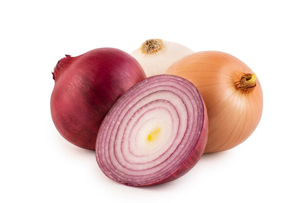

1. Seasons for Growing Onions

Onions are versatile crops grown in a variety of climates. Depending on the region and climate, onions can be grown in the following seasons:
- Kharif Season: Onions are sown in monsoon (June-July) and harvested in October-November.
- Rabi Season: The winter crop is sown in October-November and harvested in March-April.
- Late Kharif Season: In some regions, onions can be sown in August-September and harvested in January-February.